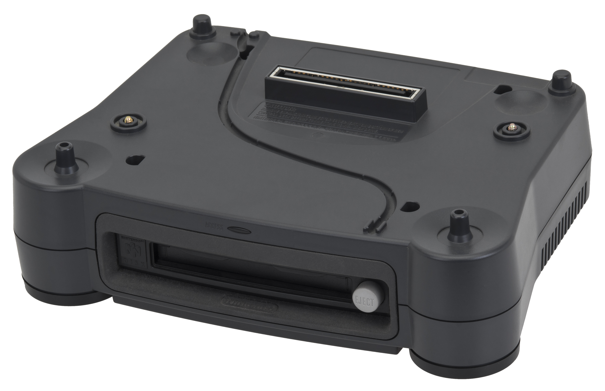
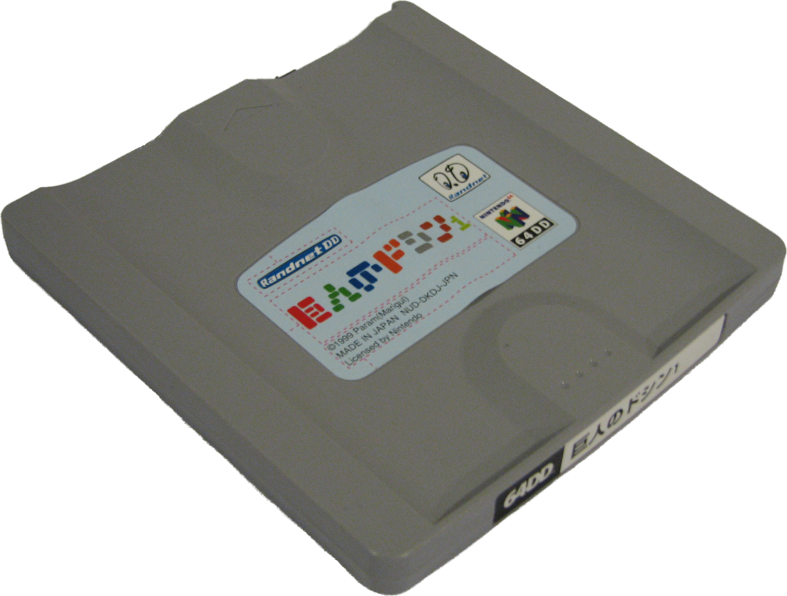
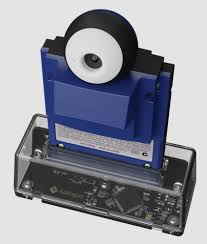

Hardware
Original Game Boy Camera
The original Game Boy Camera (or Pocket Camera) is a Game Boy accessorie compatible with every Game Boy console except the Game Boy Micro.
From upper left to lower right, yellow modded Game Boy DMG, green Game Boy Pocket, purple Game Boy Color, orange Game Boy Advance, grey Game Boy Advance SP
All original Game Boy Camera with all compatible Game Boy, image from Rembrandx
Released in 1998, with various color shells (blue, green, red, yellow, and clear purple only in Japan), the camera has a 128x128 pixels CMOS sensor to capture 128x112 pixels images in a 4-grayscale palette. The accessorie allows users to capture selfies with a 180°-swivel front-facing camera. It has a 30 images internal storage.
Original transfering methods
Images could be transfered to other Game Boy and printed on thermal paper with the Game Boy Printer thanks to the Game Link Cable.
By Prime Blue derivative work: Prime Blue (talk) - Game_Boy_Printer.png, CC0, Link
{kind=link}
Also images can be copied to a 64DD floppy disk via N64 controller’s Transfer Park.

By Evan-Amos - Own work, CC BY-SA 3.0, Link
{kind=link}

By No machine-readable author provided. The Jedi~commonswiki assumed (based on copyright claims). CC BY-SA 3.0, Link
{kind=link}
Actual transfering methods
To download Game Boy Camera images on your computer, you can use GB Operator.

GB Operator by epilogue Epilogue
If there’s another device you know to transfer Game Boy Camera images on your desktop, please let me know.